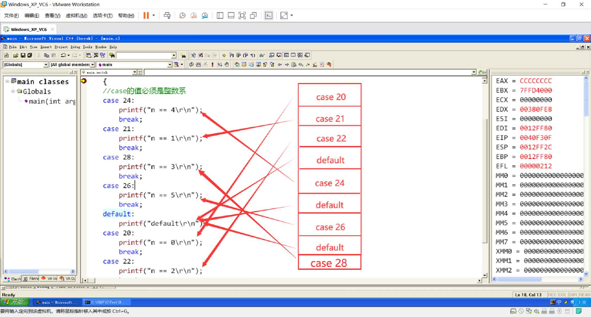

VC++ 6.0远古级IDE的使用，C语言switch case的内部优化。
VC++ 6.0 文件的创建
- 第一步：打开Microsoft Visual C++ 6.0
- 第二步：点击左上角的File、New
- 第三步：点击File栏下的C++ Source File，之后输入对应的文件名及文件存放目录即可创建一个新的
.c文件
VC++ 6.0 快捷键的使用
- F1：调出MSDN（查询函数帮助文档）
- F5：编译后调试运行
- F7：编译 + 链接
- F9：当前行添加/取消断点
- F10：步过（单步走）
- F11：步入（单步进入，查看函数实现的功能）
- CTRL + F5：直接运行
- CTRL + F7：只编译不链接
- Shift + F11：Step out（跳出）
- CTRL + F10：单步跳转到鼠标点击的光标处
- ALT + 8：跳转到反汇编代码窗口
- IDE（Integrated Development Environment）：集成开发环境
操作示例：
VC++ 6.0菜单栏的调整：
VC++ 6.0 调试程序时，需要使用的窗口：内存窗口、监视窗口、堆栈窗口、寄存器窗口。
在编写程序是，可以将鼠标的光标放置在想要了解的库函数上，按F1键，即可弹出MSDN帮助文档。
VC++ 6.0 使用Alt + 8 打开当前行的反汇编窗口，同时还可以鼠标右击该窗口，点击”Code Bytes” 查看对应的机器码。
Windows XP 下使用VC++ 6.0 查看内存的分布，可以发现内存4GB空间的前2GB有前64KB、后64KB的内存空间是属于系统保留区，前64KB用来做无效指针，无效赋值的检查，后64KB用来做内核的交互。
API PK 库函数
看环境：如果没有造缓存， fread 就比 库函数的执行效率要慢一点。
malloc（C库函数） –> HeapAlloc（API函数）
不同平台的C编译器会对这个平台接口做一定的封装工作。
if else
可以做复杂的条件判断、可以设定条件的优先级（将执行数据量大的条件放置在前面）、可做区间判断、使用灵活。
缺点：阶梯比较，如果数量比较次数较多的话，就没有switch case效果好。
switch case
case 的值必须是整型系：整数或者类整型 ASCII（‘A’），long（5L）型都可以。
switch语句是一个优化版的分支结构，在汇编的年代这个结构很多人在用，后来C/C++标准委员会觉得这个结构很实用，之后就将其集成到C语言的语法框架里，之后将其命名为switch结构。俩次到位，第一次求得switch表达式中的值，根据值访问内存中对应的地址表进行跳转。
switch case内部优化方案之一（连续或较为连续方案）
当case值按正顺序排列时在内存中的分布情况如下
发现在内存地址表中，存储的case值下对应的代码地址是连续的
基本结构思想：根据switch中表达式的值，找到内存中case内存地址表的对应的下标值。
当打乱case 值进行逆序排列后，内存中的分布情况如下
即使case 后的值顺序进行了更改，但是通过case 的内存地址表可以发现，case值依然是顺序排列的。
将case值进行调大，打乱顺序，case值没有间隔：
通过反汇编窗口可以发现case值从20开始，前20是空值，就像数组中的前20元素是空值一样，存储空值是没有意义的，所以系统内部进行了坐标平移，即使case值顺序打乱后，通过case 内存地址表可以发现，其值依然是按循序进行排列的
将case值设定为不连续的，中间进行跳值，case值从20到28，去掉23、25、27

通过case 地址内存表的地址以及反汇编窗口可以发现，其case值依旧是连续排列的，中间缺少的值case 23、case 25、case27都用default下的语句地址进行了填充。
将case值与值之间间隔设置5个（超过5个）
可以看出case值在内存中的分布已经不在连续了
得出结论
- 每个switch case分支的访问效率均等
- 不管怎样调整case的位置都不会影响它们的访问效率
switch case 结构有四套优化方案，上面演示的就是连续或较为连续的方案：case的数量需要大于三个，只有这样才有优化行为，case 的值需要连续，如果不连续，中间欠缺的值不能超过5个，如果超过5个或者等于5个，那么其在内存中就不是连续存储的。
case 的值不能为小数是因为其在内存中存储的结构类似于数组的存储结构，需要根据switch表达式的值在内存中进行查表，基于此，case 的值必须是类整型。